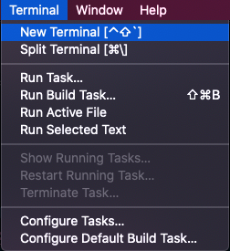
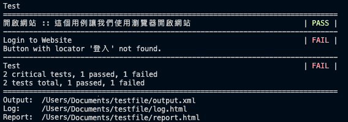
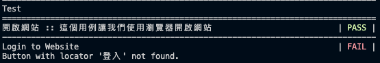
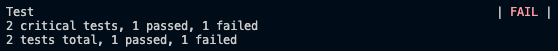
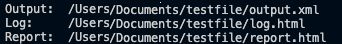

- Robot Framework 概念：
Robot Framework 執行終端機
Robot Framework 執行終端機允許使用者直接輸入指令命令電腦執行操作。讓我們使用 "cd" 這個指令來熟悉一下終端機的使用吧！執行 "cd" 後可以變換目前資料夾的位置。在 Robot Framework 要執行檔案的時候，必須先在終端機指向正確的檔案資料夾目錄才可以執行該目錄的 robot 檔案。
- 步驟一：打開 Visual Studio 裡面的終端機 (Terminal)。 
- 步驟二：在終端機輸入 cd /Users/Documents/projects
⇥使用 cd 指令變更目前所在資料夾位置到 ../projects⇤ - 步驟三：成功導向到執行檔所屬資料夾 (projects) 之後。輸入指令執行檔案 robot test.robot
⇥執行測試用例檔案時使用 robot 執行檔案，然後打上執行檔的檔案名字 test.robot⇤
執行在 projects 資料夾裡面的一個 robot 檔案 "test.robot"。
要執行測試用例檔案時，可以結合以下指令達到想要的測試報告結果
| 指令 | 敘述 | 範例 |
|---|---|---|
| cd | cd 代表 change directory。變更目前所在資料夾位置入徑。提醒：執行 .robot 檔案之前必須先指到執行檔所在位置，才能執行成功。 如果在不正確的資料夾位置執行檔案，則會出現這個訊息： [ ERROR ] Parsing 'test.robot' failed: File or directory to execute does not exist. ⇥解釋：這個檔案不存在⇤ |
cd /Documents/testfile |
| . | 執行資料夾裡面所有的 robot 檔案。包括子文件夾裡面的 robot 檔案 | robot . |
| --test | 執行某個測試用例。 例如：執行某個測試用例 "準備結帳"。 |
robot --test 準備結帳 test.robot |
| --i 或 --include “功能” | 執行所有 "功能" 標籤的測試用例。 |
|
| --exclude "Minor" | 執行的時候排除所有 "Minor" 的測試用例 | robot --exclude "Minor" test.robot |
| robot test.robot | 執行目前所在資料夾裡面單一檔案的測試用例 | robot test.robot |
| --exclude --include |
也可以混合使用不同的執行指令。 | robot --exclude Smoke --include Major test.robot |
| -d 或是 -outputdir | 指定報告輸出入徑 | robot -d /testfile/web project test.robot。如果指定的資料夾入徑尚未建立，執行檔案後則會建立指定名稱的資料夾。 |
** 正在執行檔案的期間若要終止執行，請按 Ctrl + C 終止。
終端機執行結果顯示
| 第一個區塊：各別測試用例測試細節與結果  如果用例執行失敗，接著會顯示失敗原因以利測試人員瞭解如何解決。 | |
| 顯示 | 解釋 |
|---|---|
| Test | 執行檔檔案名稱 |
| “開啟網站“，“Login to Website” | 這幾個是檔案定義的測試用例名稱 |
| 這個用例讓我們使用瀏覽器開啟網站 | 這是檔案定義的 Documentation |
| Button with locator... | 測試用例執行失敗的原因 |
| 第二個區塊：測試項目總統計數據  檔案執行結束之後，顯示測試用例執行結果數據。下面顯示報告的總結果數據。包含總共測試了幾個用例，通過的有幾個，失敗的有幾個。 | |
| 顯示 | 解釋 |
|---|---|
| 2 critical tests, 1 passed, 1 failed | 總共執行 2 個嚴重測試用例, 1 通過, 1 失敗 |
| 2 tests total, 1 passed, 1 failed | 總共測試 2個, 1 通過, 1 失敗 |
| 第三個區塊：報告輸出位置  Output, Log, Report 這三個檔案報告輸出的位置。 |